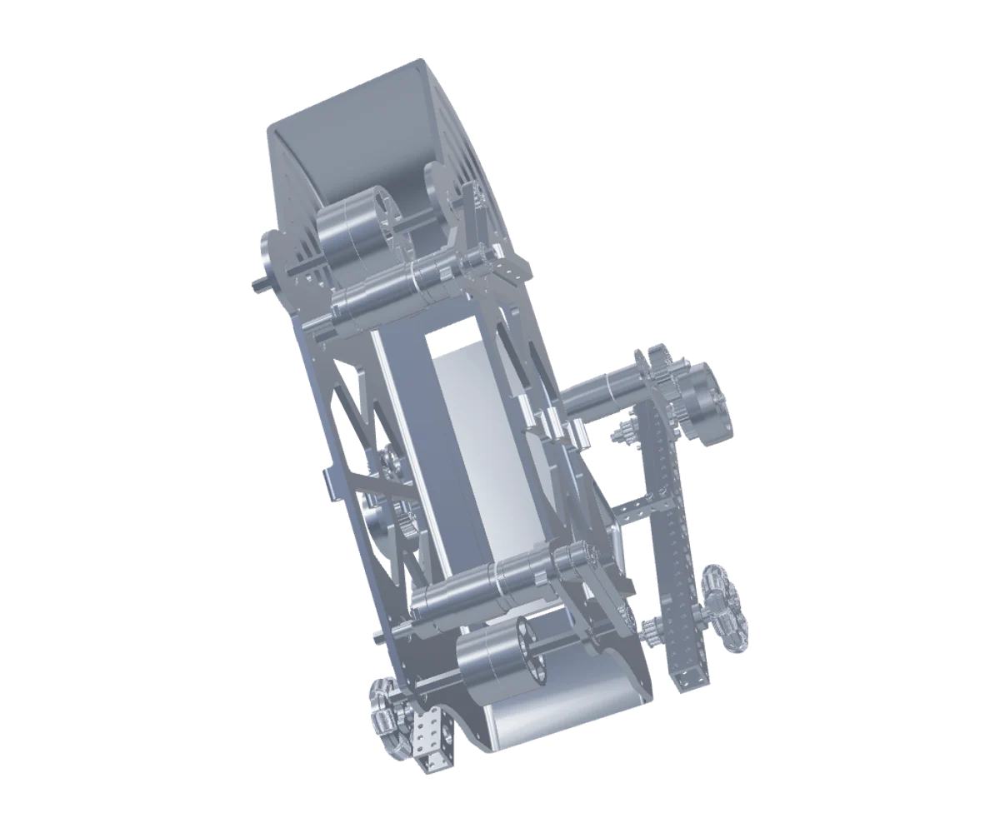
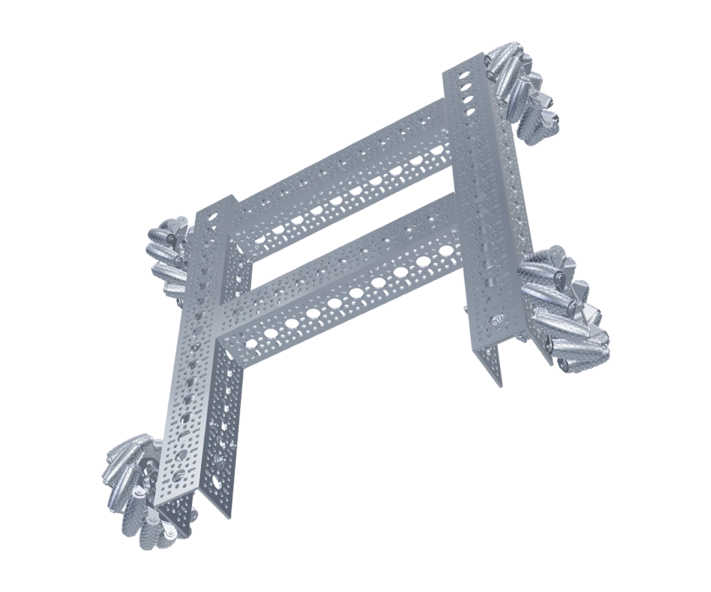

One connected history for code, CAD, tests and the reasoning between them.
Conceptual product flowTraceLab
Software · Engineering evidence
Selected work
Software, mechanisms and the interfaces between them. A selection of what I build, test and keep learning from.
Meet the person behind the workOne connected history for code, CAD, tests and the reasoning between them.
Conceptual product flowSoftware · Engineering evidence

Loads when you choose to explore.
Robotics · Interactive CAD

Loads when you choose to explore.
3D · Technical inspection

Loads when you choose to explore.
CAD · Assembly & part design
Illustrative layout study
Design · Development · Client work